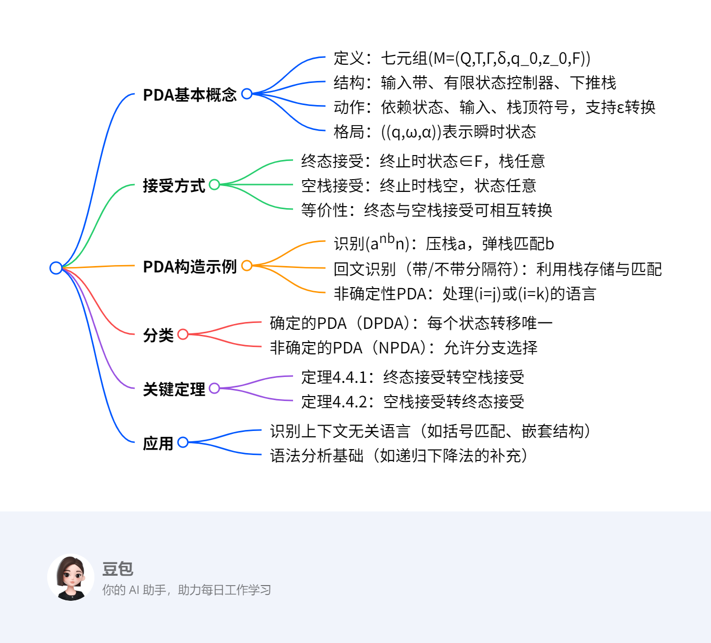

第四章：上下文无关文法与下推自动机4¶
总览¶
一段话总结¶
文档主要介绍下推自动机（PDA） 的基本概念、构造方法及应用，包括PDA的形式定义（七元组结构）、两种接受语言的方式（终态接受和空栈接受）及其等价性，重点阐述PDA作为上下文无关语言接收器的原理。通过实例（如识别\(a^nb^n\)、回文语言等）展示PDA的构造过程，并区分确定的PDA（DPDA）与非确定的PDA（NPDA）。最后提及空栈接受与终态接受的等价性定理及相关作业练习。
思维导图¶

详细总结¶
一、PDA的形式定义与结构¶
定义：
- 七元组表示：\(M=(Q,T,Γ,δ,q_0,z_0,F)\)，其中：
- \(Q\)：有限状态集；\(T\)：输入字母表；\(Γ\)：栈字母表；
- \(\delta\)：转移函数，定义为\(\delta(q,a,Z) = \{(p,α)\}\)（\(a∈T∪\{ε\}\)，\(Z∈Γ\)，\(α∈Γ^*\)）；
- \(q_0\)：初始状态；\(z_0\)：初始栈底符号；\(F\)：终态集（空栈接受时\(F=∅\)）。
结构组件：
1. 输入带：存放输入字符串，读头单向移动。
2. 有限状态控制器：根据当前状态、输入字符和栈顶符号决定动作。
3. 下推栈：后进先出（LIFO），支持压栈（push）和弹栈（pop）操作，栈顶符号决定转移规则。
转移函数类型：
- 标准转移：\(\delta(q,a,Z) = \{(p,α)\}\)，消耗输入字符\(a\)，栈顶\(Z\)替换为\(α\)，状态转为\(p\)。
- ε转移：\(\delta(q,ε,Z) = \{(p,α)\}\)，不消耗输入，直接调整状态和栈。
二、PDA的格局与接受方式¶
格局（瞬时状态）：
- 表示为\((q,ω,α)\)，其中：
- \(q\)：当前状态；\(ω\)：剩余输入字符串（\(ω=ε\)表示输入处理完毕）；
- \(α\)：栈内容（\(α=ε\)表示栈空）。
接受方式：
| 方式 | 定义 | 特点 |
|----------------|--------------------------------------------------------------------------|-----------------------------------|
| 终态接受 | \(L(M) = \{\omega \mid (q_0,\omega,z_0) \vdash^*(q,ε,α), q∈F, α∈Γ^*\}\) | 终止时状态在\(F\)中，栈非空 |
| 空栈接受 | \(L(M) = \{\omega \mid (q_0,\omega,z_0) \vdash^*(q,ε,ε), q∈Q\}\) | 终止时栈空，状态任意（\(F=∅\)） |
等价性定理：
1. 定理4.4.1：终态接受语言可转换为空栈接受语言，通过引入辅助状态和栈底符号实现。
2. 定理4.4.2：空栈接受语言可转换为终态接受语言，通过添加初始状态和终态实现。
三、PDA构造示例¶
例1：识别\(L = \{a^nb^n \mid n≥0\}\)
- 状态设计：\(Q = \{q_0,q_1,q_2\}\)（\(q_0\)初始/终态，\(q_1\)处理a，\(q_2\)处理b）。
- 转移规则：
- \(\delta(q_0,a,z_0) = \{(q_1,az_0)\}\)（压栈a）；
- \(\delta(q_1,b,a) = \{(q_2,ε)\}\)（弹栈a匹配b）；
- \(\delta(q_2,ε,z_0) = \{(q_0,ε)\}\)（栈空时返回终态）。
- 格局示例：输入\(aabb\)的识别过程为：
[
(q_0,aabb,z_0) \vdash (q_1,abb,az_0) \vdash (q_1,bb,aaz_0) \vdash (q_2,b,az_0) \vdash (q_2,ε,z_0) \vdash (q_0,ε,ε)
]
例2：识别回文语言\(\{\omega c \omega^T \mid \omega∈\{a,b\}^*\}\)（DPDA）
- 思路：用栈存储\(\omega\)，遇到分隔符\(c\)后弹栈匹配\(\omega^T\)。
- 关键转移：
- \(\delta(q_0,a,z) = \{(q_0,az)\}\)（压栈a）；
- \(\delta(q_0,c,z) = \{(q_1,z)\}\)（切换状态到匹配阶段）；
- \(\delta(q_1,a,a) = \{(q_1,ε)\}\)（弹栈a匹配输入a）。
例3：非确定PDA识别\(L = \{a^ib^jc^k \mid i=j \text{或} i=k, k≠0\}\)
- 不确定性应用：通过ε转移分支猜想匹配b或c，无需显式判断。
四、确定的PDA（DPDA）与非确定的PDA（NPDA）¶
| 类型 | 定义 | 示例语言 |
|---|---|---|
| DPDA | 对任意状态、输入、栈顶，转移唯一（无ε转移与非ε转移冲突） | \(a^nb^n\)、带分隔符回文 |
| NPDA | 允许同一状态下有多个转移选择（如ε转移与非ε转移并存） | 不带分隔符回文、\(i=j\)或\(i=k\) |
关键区别：DPDA的转移函数\(\delta\)满足：
- 对同一\(q,z\)，不同时存在\(\delta(q,a,z)\)和\(\delta(q,ε,z)\)；
- 每个转移至多一个后续状态。
五、关键定理与应用¶
定理应用：
- 等价性定理：证明PDA两种接受方式的等价性，确保理论完整性。
- 与上下文无关语言（CFL）的等价性：PDA是CFL的接收器，即CFL当且仅当存在PDA接受该语言。
应用场景：
- 语法分析：如编译器中识别嵌套结构（括号匹配、函数调用）。
- 语言识别：处理有限自动机无法识别的无限状态语言（如\(a^nb^n\)）。
关键问题¶
-
PDA与有限自动机（FA）的核心区别是什么？
答案：PDA引入下推栈作为额外存储，解决FA无法处理的上下文无关语言（如需要计数或嵌套结构的语言），而FA仅依赖有限状态，无法处理无限状态依赖问题。 -
终态接受与空栈接受的本质区别是什么？
答案： - 终态接受要求终止时状态属于终态集\(F\)，栈可以非空；
-
空栈接受要求终止时栈为空，状态可以是任意状态（\(F=∅\)）。
两者通过定理4.4.1和4.4.2可相互转换，本质上识别相同的语言类。 -
DPDA与NPDA的主要差异如何影响语言识别？
答案： - DPDA：转移确定，适合构造高效的语法分析器（如递归下降法），但只能识别部分CFL（如确定性CFL）。
- NPDA：允许非确定转移，可识别所有CFL，但实现时需回溯或状态枚举，效率较低。
例如，不带分隔符的回文语言\(\omega\omega^T\)只能用NPDA识别，因无法确定中间分隔点。
下推自动机（PDA）的格局与接受方式¶
一、PDA格局的定义与组成¶
格局是描述PDA瞬时工作状态的三元组，形式为：
[
\mathbf{(q, \omega, \alpha)}
]
- \(q\)：当前状态（有限控制器状态）。
- \(\omega\)：待输入字符串（\(\omega = \varepsilon\)表示输入已处理完毕）。
- \(\alpha\)：下推栈内容（\(\alpha = \varepsilon\)表示栈为空）。
转移示例：
若转移函数\(\delta(q, a, Z) = \{(p, r)\}\)，则格局转移可表示为：
[
(q, a\omega, Z\alpha) \vdash (p, \omega, r\alpha)
]
- 含义：在状态\(q\)，输入字符\(a\)，栈顶符号\(Z\)时，消耗\(a\)，栈顶\(Z\)替换为\(r\)，状态转为\(p\)，剩余输入变为\(\omega\)。
初始与终止格局：
- 初始格局：\((q_0, \omega, z_0)\)（\(q_0\)为初始状态，\(z_0\)为初始栈底符号）。
- 终止格局：
- 终态接受：\((q, \varepsilon, \alpha)\)，其中\(q \in F\)（终态集），\(\alpha \in \Gamma^*\)（栈可为非空）。
- 空栈接受：\((q, \varepsilon, \varepsilon)\)，其中\(q \in Q\)（状态任意），栈必须为空。
二、PDA接受语言的两种方式¶
1. 终态接受¶
- 定义：
[ L(M) = {\omega \mid (q_0, \omega, z_0) \vdash^ (q, \varepsilon, \alpha), q \in F, \alpha \in \Gamma^} ] - 关键：以状态进入终态集\(F\)为接受条件，栈中内容不要求为空。
- 示例：识别\(a^nb^n\)的PDA（见下文示例），最终状态\(q_0 \in F\)，栈空时接受。
2. 空栈接受¶
- 定义：
[ L(M) = {\omega \mid (q_0, \omega, z_0) \vdash^* (q, \varepsilon, \varepsilon), q \in Q} ] - 关键：以栈为空为接受条件，状态可为任意状态（此时\(F = \emptyset\)）。
- 特点：终止状态与状态集无关，仅依赖栈是否为空。
三、PDA构造示例：识别\(L = \{a^nb^n \mid n \geq 0\}\)¶
1. 设计思路¶
- 压栈阶段：输入\(a\)时将其压入栈，状态转为\(q_1\)。
- 弹栈匹配阶段：输入\(b\)时弹出栈顶\(a\)，状态转为\(q_2\)，直至栈空。
- 接受条件：输入处理完毕且栈空时，通过\(\varepsilon\)转移回到初始状态\(q_0\)（终态）。
2. 形式定义¶
[
M = (Q, T, \Gamma, \delta, q_0, z_0, F)
]
- 状态集：\(Q = \{q_0, q_1, q_2\}\)（\(q_0\)为初态/终态，\(q_1\)处理\(a\)，\(q_2\)处理\(b\)）。
- 输入字母表：\(T = \{a, b\}\)。
- 栈字母表：\(\Gamma = \{z_0, a\}\)（\(z_0\)为栈底符号）。
- 终态集：\(F = \{q_0\}\)。
- 转移函数：
- \(\delta(q_0, a, z_0) = \{(q_1, az_0)\}\)（压栈\(a\)）。
- \(\delta(q_1, a, a) = \{(q_1, aa)\}\)（连续压栈\(a\)）。
- \(\delta(q_1, b, a) = \{(q_2, \varepsilon)\}\)（弹栈\(a\)匹配\(b\)）。
- \(\delta(q_2, \varepsilon, z_0) = \{(q_0, \varepsilon)\}\)（栈底\(z_0\)为空时返回终态）。
- \(\delta(q_2, b, a) = \{(q_2, \varepsilon)\}\)（连续弹栈\(a\)匹配\(b\)）。
3. 图形表示¶
| Text Only | |
|---|---|
4. 格局转移示例（输入\(aabb\)）¶
[
\begin{align}
&(q_0, aabb, z_0) \vdash (q_1, abb, az_0) \quad \text{（压栈\(a\)）} \
&\vdash (q_1, bb, aaz_0) \quad \text{（再压栈\(a\)）} \
&\vdash (q_2, b, az_0) \quad \text{（弹栈\(a\)匹配\(b\)）} \
&\vdash (q_2, \varepsilon, z_0) \quad \text{（再弹栈\(a\)匹配\(b\)）} \
&\vdash (q_0, \varepsilon, \varepsilon) \quad \text{（栈空，进入终态）} \
\end{align}
]
结论：输入被接受，符合终态接受条件。
四、课堂练习与关键要点¶
1. 练习：构造PDA识别\(L = \{a^mb^n \mid m \neq n, m, n \geq 1\}\)¶
- 思路：利用两个分支分别处理\(m > n\)和\(m < n\)，通过栈计数并允许非确定性转移。
- 图形表示（部分转移）：
- \(q_0 \xrightarrow{(a, z_0/az_0)} q_1\)（压栈\(a\)）。
- \(q_1 \xrightarrow{(b, a/ε)} q_2\)（弹栈\(a\)匹配\(b\)）。
- \(q_2 \xrightarrow{(ε, z_0/ε)} q_f\)（栈空时接受，对应\(m = n\)，但需排除，故实际通过其他路径处理\(m \neq n\)）。
2. 关键要点总结¶
| 概念 | 核心内容 |
|---|---|
| 格局 | 三元组\((q, \omega, \alpha)\)描述PDA的状态、剩余输入和栈内容，是转移的基础。 |
| 终态接受 | 依赖状态进入终态集，栈可非空，适用于需明确终止状态的场景。 |
| 空栈接受 | 依赖栈为空，状态任意，适用于仅需验证结构匹配的场景（如括号匹配）。 |
| PDA构造 | 通过压栈记录信息，弹栈匹配规则，利用状态转移实现计数或嵌套结构识别。 |
| ## 确定的下推自动机(DPDA) | |
| ### 确定的下推自动机（DPDA）概述 | |
| 定义： | |
| - 核心特征：对于每个状态、输入字符和栈顶符号，后续状态转移唯一确定，不存在分支选择。 | |
| - 形式化条件（满足以下其一）： | |
| 1. 非ε转移唯一：对任意状态\( q \)、栈顶符号\( z \)和输入字符\( a \)，\( \delta(q, a, z) \)最多含一个转移，且无ε转移（\( \delta(q, \varepsilon, z) = \emptyset \)）。 | |
| 2. 仅允许唯一ε转移：当\( \delta(q, a, z) = \emptyset \)（无输入字符转移）时，\( \delta(q, \varepsilon, z) \)最多含一个ε转移。 | |
| - 本质目的：避免在ε转移和非ε转移间产生选择歧义，确保每一步操作唯一确定。 |
DPDA构造示例：识别\( L = \{\omega c \omega^T \mid \omega \in \{a, b\}^*\} \)¶
1. 解题思路¶
- 阶段①：压栈存储
- 从初始状态\( q_0 \)开始，输入字符\( \omega \)（任意\( a/b \)串）时，将字符压入栈中，状态保持\( q_0 \)不变，直至遇到中心标记\( c \)。
- 阶段②：切换状态
- 遇到标记\( c \)时，状态切换为\( q_1 \)，栈内容不变，准备进入匹配阶段。
- 阶段③：弹栈匹配
- 在状态\( q_1 \)下，输入字符需与栈顶符号逆向匹配（即\( \omega^T \)），每次匹配成功则弹出栈顶符号，直至栈空时进入终态\( q_f \)。
2. 转移函数与图形表示¶
- 关键转移规则：
- 压栈阶段：
- \( \delta(q_0, a, z) = \{(q_0, a z)\} \)（输入\( a \)，压栈\( a \)，状态不变）。
- \( \delta(q_0, b, z) = \{(q_0, b z)\} \)（输入\( b \)，压栈\( b \)，状态不变）。
- 切换状态：
- \( \delta(q_0, c, z) = \{(q_1, z)\} \)（遇到\( c \)，状态转为\( q_1 \)，栈顶不变）。
- 弹栈匹配：
- \( \delta(q_1, a, a) = \{(q_1, \varepsilon)\} \)（输入\( a \)，弹栈\( a \)，状态不变）。
- \( \delta(q_1, b, b) = \{(q_1, \varepsilon)\} \)（输入\( b \)，弹栈\( b \)，状态不变）。
- \( \delta(q_1, \varepsilon, z_0) = \{(q_f, \varepsilon)\} \)（栈空时，通过ε转移进入终态\( q_f \)）。
- 图形表示：
3. 形式定义（关键组件）¶
- 状态集：\( Q = \{q_0, q_1, q_f\} \)（\( q_0 \)初始状态，\( q_f \)终态）。
- 输入字母表：\( T = \{a, b, c\} \)。
- 栈字母表：\( \Gamma = \{z_0, a, b\} \)（\( z_0 \)为栈底符号）。
- 初始状态/栈底：\( q_0 \)，\( z_0 \)。
- 终态集：\( F = \{q_f\} \)。
DPDA与NPDA的核心区别¶
| 特征 | DPDA | NPDA |
|---|---|---|
| 转移确定性 | 每个状态转移唯一，无分支。 | 允许同一状态下有多个转移选择（如ε与非ε转移并存）。 |
| 接受语言类 | 仅识别确定性上下文无关语言（如带分隔符回文）。 | 可识别所有上下文无关语言（包括非确定性语言，如不带分隔符回文）。 |
| 典型应用 | 构造高效语法分析器（如递归下降法）。 | 理论上描述所有CFL，但实现需处理不确定性。 |
关键要点总结¶
- DPDA的本质：通过限制转移的唯一性，避免非确定性选择，确保分析过程可预测。
- 构造核心：
- 利用栈顺序存储输入前缀（如\( \omega \)），通过标记符（如\( c \)）分隔存储与匹配阶段。
- 匹配阶段通过逆向弹栈验证输入后缀是否为前缀的逆（如\( \omega^T \)）。
- 条件约束：同一状态和栈顶符号下，不能同时存在ε转移和非ε转移，确保每一步操作唯一。
非确定的下推自动机(NPDA)¶
非确定的下推自动机（NPDA）概述¶
定义：
- 核心特征：允许在同一状态、输入字符和栈顶符号下存在多个转移选择，包括同时支持ε转移与非ε转移，或同一条件下的不同状态/栈操作。
- 与DPDA的本质区别：无需满足转移唯一性，通过非确定性分支处理复杂语言结构（如多条件匹配、未知中间点的回文等）。
NPDA构造示例：识别\( L = \{\omega\omega^T \mid \omega \in \{a, b\}^*\} \)¶
1. 关键修改与非确定性引入¶
- 与DPDA的对比：
- DPDA版本：需显式分隔符（如\( c \)）标记输入前缀结束，通过\( \delta(q_0, c, z) = \{(q_1, z)\} \)切换至匹配阶段。
- NPDA版本：删除分隔符\( c \)，将转移条件从\( c, z/z \)改为\( \varepsilon, z/z \)，允许机器在任意时刻通过ε转移从存储阶段（压栈）切换至匹配阶段（弹栈）。
- 非确定性来源：
- 机器无需等待特定字符（如\( c \)），可自行“猜想”何时停止压栈并开始匹配，通过多个分支尝试不同的匹配点。
2. 转移函数与图形表示¶
- 关键转移规则：
- 压栈阶段（非确定分支前）：
- \( \delta(q_0, a, z) = \{(q_0, az)\} \)（输入\( a \)，压栈\( a \)，保持状态\( q_0 \)）。
- \( \delta(q_0, b, z) = \{(q_0, bz)\} \)（输入\( b \)，压栈\( b \)，保持状态\( q_0 \)）。
- 非确定切换（ε转移）：
- \( \delta(q_0, \varepsilon, z) = \{(q_1, z)\} \)（任意时刻通过ε转移切换至状态\( q_1 \)，开始匹配）。
- 弹栈匹配阶段：
- \( \delta(q_1, a, a) = \{(q_1, \varepsilon)\} \)（输入\( a \)，弹栈\( a \)，保持状态\( q_1 \)）。
- \( \delta(q_1, b, b) = \{(q_1, \varepsilon)\} \)（输入\( b \)，弹栈\( b \)，保持状态\( q_1 \)）。
- \( \delta(q_1, \varepsilon, z_0) = \{(q_f, \varepsilon)\} \)（栈空时进入终态\( q_f \)）。
- 图形表示：
3. 接受逻辑¶
- 非确定性分支：
- 分支1：压栈全部输入后切换至匹配阶段（适用于\( \omega\omega^T \)，如\( aa \to a\#a \)）。
- 分支2：提前切换至匹配阶段（可能导致匹配失败，如压栈部分字符后尝试匹配不完整的\( \omega^T \)）。
- 成功条件：至少存在一个分支使输入处理完毕且栈空（或进入终态），即语言中存在至少一条有效推导路径。
NPDA构造示例：识别\( L = \{a^ib^jc^k \mid i=j \text{或} i=k, k\neq0\} \)¶
1. 解题思路¶
- 核心挑战：同一输入需满足两个条件之一（\( i=j \)或\( i=k \)），DPDA无法确定优先匹配哪一条件。
- 非确定性应用：
- 通过ε转移创建两个分支，分别猜想匹配\( i=j \)（a与b匹配）或\( i=k \)（a与c匹配）。
- 每个分支独立处理压栈与弹栈，只要其中一个分支成功匹配，输入即被接受。
2. 关键转移规则（简化描述）¶
- 分支1：匹配\( i=j \)
- 压栈所有a，输入b时弹栈a直至栈空（类似\( a^nb^n \)的DPDA逻辑）。
- 分支2：匹配\( i=k \)
- 压栈所有a，输入c时弹栈a直至栈空（忽略b的输入，直接匹配a与c）。
- 非确定性切换：通过ε转移在处理a之后、处理b或c之前选择分支，无需显式输入字符触发。
NPDA的核心优势与应用场景¶
| 优势 | 典型场景 |
|---|---|
| 处理多条件语言 | 识别满足“或”关系的语言（如\( i=j \)或\( i=k \)），通过分支并行验证条件。 |
| 处理未知中间点 | 识别不带分隔符的回文（\( \omega\omega^T \)），无需预先确定分隔符位置。 |
| 理论完整性 | 可识别所有上下文无关语言（CFL），而DPDA仅能识别部分CFL（确定性CFL）。 |
总结：NPDA通过允许非确定转移，降低了构造复杂语言识别器的难度，但其非确定性需通过回溯或状态枚举实现，实际应用中效率通常低于DPDA。
空栈接受与终态接受的等价¶
空栈接受与终态接受的等价性¶
一、核心定理与等价性定义¶
定理4.4.1：若语言\( L_f \)可由终态接受的PDA \( M_f \)识别，则存在空栈接受的PDA \( M_\phi \)识别相同语言，即\( L_\phi = L_f \)。
定理4.4.2：若语言\( L_\phi \)可由空栈接受的PDA \( M_\phi \)识别，则存在终态接受的PDA \( M_f \)识别相同语言，即\( L_f = L_\phi \)。
等价性本质：两种接受方式在识别能力上等价，可通过构造辅助状态和栈操作相互转换。
二、终态接受转空栈接受（定理4.4.1证明思路）¶
目标：将终态接受的PDA \( M_f = (Q, T, \Gamma, \delta, q_0, z_0, F) \)转换为空栈接受的PDA \( M_\phi \)。
构造方法：
1. 添加辅助状态：引入新状态\( q_e \)（弹出栈顶）和\( q_1 \)（初始状态）。
2. 扩展栈字母表：添加新栈底符号\( z_1 \)，确保初始栈为\( z_1 \)，并将原初始栈底\( z_0 \)压在\( z_1 \)之上。
3. 定义转移函数\( \delta_1 \)：
- ① 初始化栈：\( \delta_1(q_1, \varepsilon, z_1) = \{(q_0, z_0z_1)\} \)，进入原PDA的初始状态\( q_0 \)，栈底为\( z_1 \)。
- ② 模拟原转移：对所有\( q \in Q \)，\( a \in T \cup \{\varepsilon\} \)，\( z \in \Gamma \)，\( \delta_1(q, a, z) = \delta(q, a, z) \)，保持原PDA行为不变。
- ③ 终态处理：对所有终态\( q_f \in F \)和栈符号\( z \in \Gamma \cup \{z_1\} \)，\( \delta_1(q_f, \varepsilon, z) = \{(q_e, \varepsilon)\} \)，进入弹出状态\( q_e \)。
- ④ 弹栈至空：在状态\( q_e \)下，通过\( \varepsilon \)转移不断弹出栈顶符号，直至栈空（\( \alpha = \varepsilon \)）。
关键逻辑：当原PDA进入终态时，通过辅助状态逐步弹空栈，将终态接受转换为空栈接受。
三、空栈接受转终态接受（定理4.4.2证明思路）¶
目标：将空栈接受的PDA \( M_\phi = (Q, T, \Gamma, \delta_\phi, q_0, z_0, \emptyset) \)转换为终态接受的PDA \( M_f \)。
构造方法：
1. 添加辅助状态：引入新初始状态\( q_{0f} \)和终态\( q_f \)。
2. 扩展栈字母表：添加新栈底符号\( z_1 \)，初始栈为\( z_1 \)，并将原初始栈底\( z_0 \)压在\( z_1 \)之上。
3. 定义转移函数\( \delta_f \)：
- ① 初始化栈：\( \delta_f(q_{0f}, \varepsilon, z_1) = \{(q_0, z_0z_1)\} \)，进入原PDA的初始状态\( q_0 \)。
- ② 模拟原转移：对所有\( q \in Q \)，\( a \in T \cup \{\varepsilon\} \)，\( z \in \Gamma \)，\( \delta_f(q, a, z) = \delta_\phi(q, a, z) \)，保持原PDA行为不变。
- ③ 空栈处理：当栈底符号\( z_1 \)暴露（即原栈空）时，通过\( \delta_f(q, \varepsilon, z_1) = \{(q_f, \varepsilon)\} \)进入终态\( q_f \)。
关键逻辑：当原PDA栈空时，通过辅助状态触发终态，将空栈接受转换为终态接受。
四、空栈接受的定义（单选题解析）¶
问题：PDA用空栈接受方式的正确定义是？
选项分析：
- A：\( L(M) = \{\omega \mid (q_0, \omega, Z_0) \vdash^* (q, \varepsilon, \alpha), q \in F, \alpha \in \Gamma^* \} \)
错误：属于终态接受，要求状态\( q \in F \)，栈可非空。
- B：\( L(M) = \{\omega \mid (q_0, \omega, Z_0) \vdash^* (q, \omega, \varepsilon), q \in F \} \)
错误：输入未处理完毕（\( \omega \)非空），且混淆了栈空与输入处理状态。
- C：\( L(M) = \{\omega \mid (q_0, \omega, Z_0) \vdash^* (q, \varepsilon, \varepsilon), q \in Q \} \)
正确：空栈接受要求输入处理完毕（\( \omega = \varepsilon \)）且栈空（\( \alpha = \varepsilon \)），状态任意（\( q \in Q \)）。
- D：\( L(M) = \{\omega \mid (q_0, \omega, Z_0) \vdash^* (q, \varepsilon, \alpha), q \in F, \alpha \in \Gamma \} \)
错误**：同时要求终态（\( q \in F \)）和栈非空（\( \alpha \in \Gamma \)），属于混合定义。
答案：C
五、总结¶
| 接受方式 | 核心条件 | 转换关键 |
|---|---|---|
| 终态接受 | 状态在终态集\( F \)，栈任意。 | 通过辅助状态弹栈至空（定理4.4.1）。 |
| 空栈接受 | 栈空（\( \alpha = \varepsilon \)），状态任意。 | 通过辅助状态触发终态（定理4.4.2）。 |
| 等价性意义 | 证明PDA两种模型的统一性，便于理论分析与实际应用选择。 |